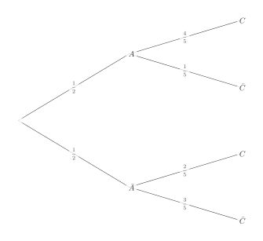
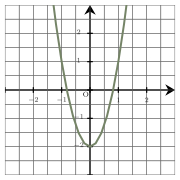
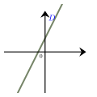
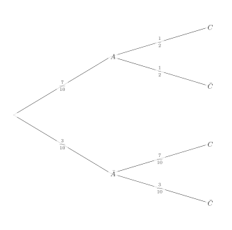
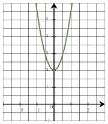
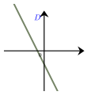

Séance 25 — Probabilités conditionnelles et algèbre
On donne l’arbre de probabilités ci-dessous :

$P_C(A)=\ldots$
A.
$\dfrac{2}{5} $
B.
$\dfrac{1}{3}$
C.
$\dfrac{4}{5} $
D.
$\dfrac{2}{3} $
On sait que $ P_C(A)=\dfrac{P(A \cap C)}{P(C)}$
D’après la formule des probabilités totales :
$$\begin{aligned}
P(C)&=p(A\cap C)+p(\bar A \cap C)\\
&=P(A)\times P_A(C)+P(\bar A)\times P_{\bar A}(C)\\
&=\dfrac{1}{2}\times \dfrac{4}{5}+\dfrac{1}{2}\times \dfrac{2}{5}\\
&=\dfrac{2}{5}+\dfrac{1}{5}\\
&=\dfrac{3}{5}
\end{aligned}$$
Et donc :
$$\begin{aligned}
P_C(A)&=\dfrac{P(A \cap C)}{P(C)}\\
&=\dfrac{P(A)\times P_A(C)}{P(C)}\\
&=\dfrac{\dfrac{2}{5}}{\dfrac{3}{5}}\\
&=\dfrac{2}{3}
\end{aligned}$$
La bonne réponse est la réponse D.
Une augmentation de $10$ % d’un article entraîne une augmentation du prix de $24$ €.
Le prix de cet article avant l’augmentation est :
A.
$240$ €
B.
$21{,}6$ €
C.
$26{,}4$ €
D.
$34$ €
$10\,$ % du prix représente $24$ €, donc $100$ % du prix représente $10$ fois plus que $24$ € (car $10\times 10=100$).
Le prix de l’article était donc : $10\times24=240$ €.
La bonne réponse est la réponse A.
Voici la représentation graphique d’une fonction $f$ définie sur $\mathbb{R}$ par $f(x)=ax^2+b$.

À partir de cette représentation graphique, on a :
A.
$a=-2$ et $b=-2$
B.
$a=3{,}5$ et $b=-2$
C.
$a=3$ et $b=2$
D.
$a=3$ et $b=-2$
La valeur de $b$ est donnée par l’image de $0$ par $f$ (ordonnée du point d’intersection entre la courbe et l’axe des ordonnées).
Ainsi, $b=-2$.
La valeur de $a$ s’obtient (par exemple) grâce à l’image de $1$ par la fonction $f$.
On lit $f(1)=1$.
D’où, $a\times 1^2-2=1$, soit $a=3$.
Ainsi, $f(x)=3x^2-2$.
La bonne réponse est la réponse D.
Soit $x$ un réel.
À quelle expression est égale $-4(x+4)^2+2$ ?
A.
$-4x^2 -32x-66$
B.
$-4x^2 -16x-62$
C.
$-4x^2 +32x-62$
D.
$-4x^2 -32x-62$
On développe l’expression de l’énoncé.
$$\begin{aligned}
-4(x+4)^2+2&=-4\left(x^2 +8x+16\right)+2\\
&=-4x^2 -32x-64 +2\\
&=-4x^2 -32x-62\\
\end{aligned}$$
La bonne réponse est la réponse D.
On a représenté ci-contre une droite $D$.
Parmi les quatre équations ci-dessous, la seule susceptible d’être représentée par la droite $D$ est :

A.
$y=x^2-(x+1)^2+4$
B.
$y=3x+3$
C.
$y=-3x+3$
D.
$6x+2y-6=0$
On observe sur le graphique que le coefficient directeur est positif ($D$ représente une fonction affine croissante) et que l’ordonnée à l’origine est strictement positive ($D$ coupe l’axe des ordonnées au-dessus de l’origine).
On écrit les équations qui ne sont pas forme réduite, sous forme réduite :
• $y=3x+3$ est sous forme réduite.
• $y=-3x+3$ est sous forme réduite.
• $6x+2y-6=0$ s’écrit $y=-3x+3$.
• $y=x^2-(x+1)^2+4$ s’écrit $y=-2x+3$.
La seule équation ayant un coefficient directeur positif et une ordonnée à l’origine positive est : $y=3x+3$.
La bonne réponse est la réponse B.
Quelle est l’écriture décimale du nombre dont l’écriture scientifique est $2{,}14\times 10^{-3}$ ?
A.
$0{,}002\,14$
B.
$0{,}021\,4$
C.
$0{,}000\,214$
D.
$2\,140$
Multiplier par $10^{-3}$ revient à multiplier par $0{,}001$, donc l’écriture décimale de $2{,}14\times 10^{-3}$ est : $0{,}002\,14$.
La bonne réponse est la réponse A.
Devoirs — Séance 25 — Probabilités conditionnelles et algèbre
On donne l’arbre de probabilités ci-dessous :

$P_C(A)=\ldots$
A.
$\dfrac{1}{2}$
B.
$\dfrac{5}{8} $
C.
$\dfrac{7}{20} $
D.
$\dfrac{1}{2} $
Parmi les $2\,000$ logements que compte une ville, $10\,$ % sont des maisons et $80\,$ % de celles-ci sont des T2.
Le nombre de maisons de type T2 dans cette ville est :
A.
$1\,600$
B.
$16$
C.
$1\,910$
D.
$160$
Voici la représentation graphique d’une fonction $f$ définie sur $\mathbb{R}$ par $f(x)=ax^2+b$.

À partir de cette représentation graphique, on a :
A.
$a=2$ et $b=2$
B.
$a=3{,}5$ et $b=2$
C.
$a=3{,}5$ et $b=-2$
D.
$a=-3{,}5$ et $b=2$
Soit $x$ un réel.
À quelle expression est égale $-4(x+2)^2-1$ ?
A.
$-4x^2 -8x-17$
B.
$-4x^2 -16x-15$
C.
$-4x^2 -16x-17$
D.
$-4x^2 +16x-17$
On a représenté ci-contre une droite $D$.
Parmi les quatre équations ci-dessous, la seule susceptible d’être représentée par la droite $D$ est :

A.
$y=3x-2$
B.
$6x-2y-4=0$
C.
$y=x^2-(x-2)^2+2$
D.
$y=-3x-2$
Quelle est l’écriture décimale du nombre dont l’écriture scientifique est $9{,}41\times 10^{-4}$ ?
A.
$0{,}000\,941$
B.
$0{,}000\,094\,1$
C.
$94\,100$
D.
$0{,}009\,41$